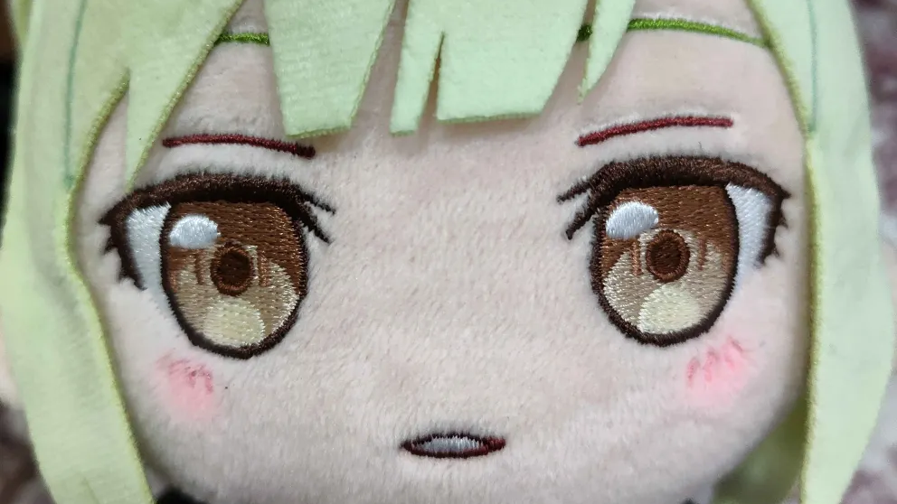

21歲，是個學生。
專案主要負責前端、報告、溝通及領導的部分。
擅長溝通，興趣是直播、唱歌、購物，
對自己的定位清晰，喜歡追求新挑戰同時又喜歡平穩的生活步調。
多因子智慧選股系統
我們的目標
- 打造一套結合多因子投資邏輯與視覺化介面的智慧選股輔助平台
- 以科學化、客觀化的分析方式協助投資新手快速理解財務因子，提升選股決策效率與準確性
- 平台提供可自訂的因子組合與權重設定，讓使用者依自身偏好調整策略
- 進一步培養理性投資習慣，推動全民投資教育與資本市場健全發展
成員介紹

22歲，是個學生。
在此專案主要負責小部分前端與後端程式碼以及後端資料庫的對接。
對於說話較不擅長，興趣是打遊戲、vtuber以及看小說。
對日文略懂一二，喜歡閱讀自我探索類型的書籍。
養著許多老公老婆兒子女兒的死宅。
專案中負責彙整股市資料、整理相關研究論文、撰寫專題文件、上市類股查詢頁面、股票分類頁面計算與架構。
超級 I 人，目前每天正與巴哈的貂民、樂子人奮鬥中。

21歲，目前於中原大學就讀。
在這個專案主要負責前端頁面設計、少量後端程式碼
興趣是玩競技遊戲、打籃球、跑步，喜歡明確的目標和邏輯思考
有時不太擅長溝通，期許自己能更加進步。